What Is Claucraft?
A Windows desktop shell for running and managing multiple Claude Code sessions at once.
Claucraft is an MDI (multiple-document-interface) terminal application: every Claude Code
session runs inside its own floating terminal window, tiled or cascaded alongside file editors,
diagram viewers and memory panels, all within one project-aware shell. It talks to the same
claude CLI you already use — Claucraft does not replace it, it wraps it with project
management, session history, git tooling and layout features built around running several
sessions side by side.
| Claude Desktop app | Claude Code CLI | VS Code extension | Claucraft | |
|---|---|---|---|---|
| What it is | Chat client for Claude, no terminal or file system access | Single terminal session bound to one shell window | Claude Code embedded in one editor window, one session per window | Standalone MDI shell hosting many Claude Code sessions in parallel |
| Multiple sessions | Separate chats, no project/file context | One per terminal tab/window you open yourself | One per VS Code window | Many, tiled/cascaded automatically, with saved workspace layouts |
| Project switching | N/A | Manual cd and relaunch |
Requires switching VS Code windows/folders | A project combo box switches the whole shell's context — explorer, git, sessions — at once |
| Session history | Chat history in the app | Resume by session ID from the command line | VS Code's own session list | Per-project session list with search, one click to resume |
| Git integration | None | Whatever the shell provides | VS Code's built-in Source Control view | Built-in panel: fetch/pull/push/merge, risky-file check, AI commit messages, commit graph |
| Best fit | Quick chat, no code | Editor-agnostic scripting, automation, one focused task | Editing code and running Claude Code in the same window | Running and comparing several Claude Code sessions across one or more projects at once |
Claucraft is aimed at the case none of the others cover well: juggling several active Claude Code sessions — different projects, different worktrees, different tasks — without losing track of which terminal is which, or wiring up your own tmux/window-manager setup to do it.
Toolbar: Project & Session
The panel at the top of the window, above everything else.
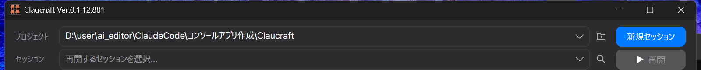
The Project row holds a folder combo box for choosing the project you are working in. Type or paste a path directly, or click the folder icon next to it to open a picker (New Project) — the same action available from the welcome page.
The Session row lists Claude Code sessions previously recorded for the selected project, newest first, with their timestamp and a short title. Selecting one enables Resume, which reopens that conversation in a new terminal window. The search icon next to the combo opens Manage Sessions, a searchable list for projects with many saved sessions.
New Session starts a fresh Claude Code conversation. Right-click it (or open its context menu) to toggle New Session (Worktree): when enabled, new sessions are started in their own git worktree, so two windows never edit the same files at once — Resume always reopens in the original project folder, where the session's history lives.
Activity Bar
The narrow strip of icons on the left edge of the window.
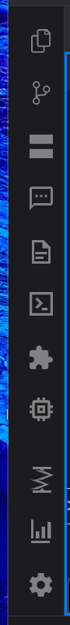
Each icon switches the side panel shown next to it:
- Explorer (Ctrl+Shift+E) — the current project's file tree.
- Snippets — reusable text blocks you can insert into a session.
- Windows — a list of every open terminal, editor, diagram and memory window.
- Diagram Viewer — renders Mermaid/graph output from a session inline.
- Chat View — a readable, non-terminal rendering of the current conversation.
- Compact — runs
/compactagainst the active session. - Slash Commands (Ctrl+/) — browse and insert available slash commands.
- Extensions — installed MCP servers, skills and plugins.
- Source Control (Ctrl+Shift+G) — git status and actions for the project.
- Cost — token usage and spend for the current session and plan.
- Memory — what Claude remembers about this project across sessions.
- Settings — application preferences, grouped by topic.
Explorer
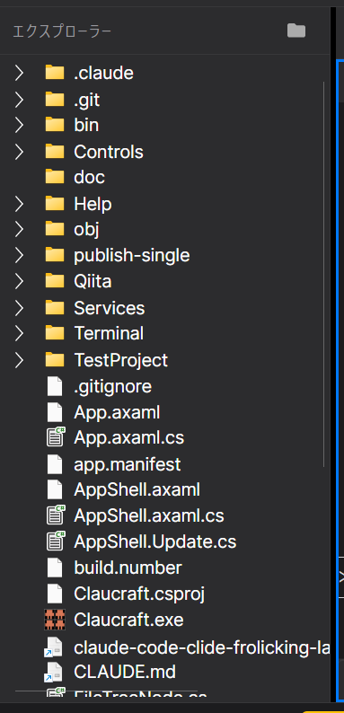
Shows the selected project's folder tree. Right-click a file or folder for common actions (open, reveal, rename, delete, and similar). Double-clicking a file opens it in a floating editor window inside the MDI area — see MDI Terminal & Editor Windows. Editor windows show Save (Ctrl+S) and Close buttons on their own title bar.
Dragging a file from the explorer onto a terminal window inserts a reference to it in the
prompt input, prefixed with @. Files inside the working folder are inserted as a
relative path, and files outside it as an absolute path — the same format you get by picking one
from the @ completion popup.
Snippets
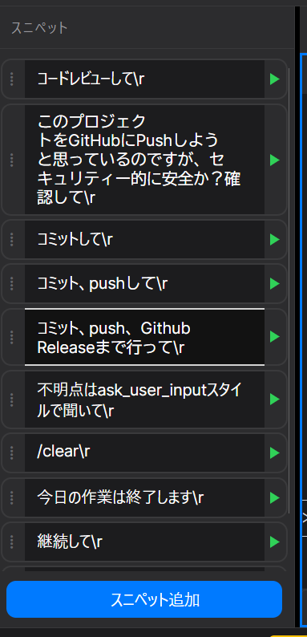
Stores short pieces of text — prompts, commands, boilerplate — that you reuse across sessions. Snippets are kept per user, not per project, so the same list follows you between projects. Use the panel's search box to filter by name or content, then insert one into the active terminal.
Windows Panel
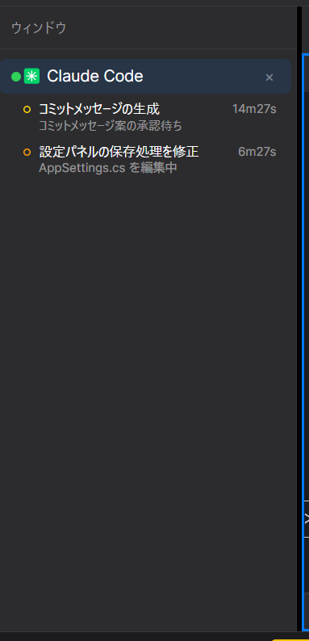
Lists every window currently open in the MDI area — terminal sessions, editor tabs, diagram viewers and memory panels — regardless of which are on-screen at the moment. Selecting an entry brings that window to the front, which is the fastest way to find a session buried behind others in Tile or Cascade layouts.
This panel also includes Agent View: background sessions started with
claude agents are listed under the window that dispatched them, along with their
state, what they're currently waiting on, and whether the process is still alive. This is read
directly from ~/.claude/jobs rather than by invoking the CLI, so the panel's
700 ms refresh cycle stays free. The same panel also shows a session's in-flight subagents
(label, type, model, depth) while they run.
Settings
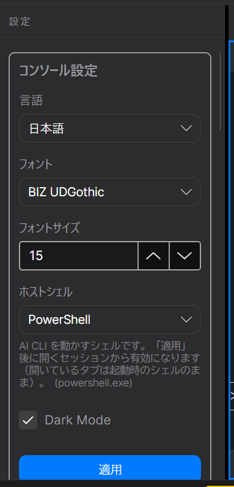
Grouped by topic: general preferences, theme, AI provider and CLI configuration, source control behavior (commit message language, risky-file checks before push), live status display, plan tier and cost dashboard, launch profiles, and keyboard shortcuts. Most settings apply immediately; a few — like the AI provider — apply to new sessions only.
MDI Terminal & Editor Windows
The main working area, filling the rest of the window.
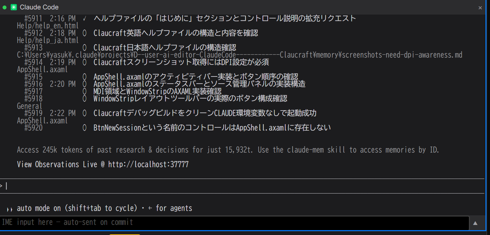
Each Claude Code session runs in its own floating terminal window inside this area, alongside any file editor, diagram or memory windows you have open. Drag a window's title bar to move it, or drag its tab in the window strip to reorder or pop it into its own top-level window. Windows can be arranged automatically (see below) or positioned freely.
Closing a terminal window ends that Claude Code process; the session itself is preserved and can be reopened later from Session → Resume.
Window Strip Toolbar
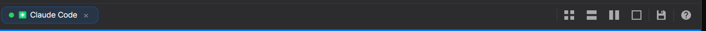
The horizontal strip directly above the MDI area lists a tab for every open window in this shell and lets you switch between them. The icon buttons on its right edge control layout:
- Tile — arrange all windows in an even grid.
- Tile Horizontally / Tile Vertically — stack windows in rows or columns.
- Full View — maximize the active window, hiding the others.
- Workspaces — save or restore a named window arrangement; see Saved Workspaces.
- Help — the button you used to open this page.
Manually resizing or moving a window switches the shell out of its current automatic layout mode into a custom one, which is preserved until you pick a layout button again.
Saved Workspaces
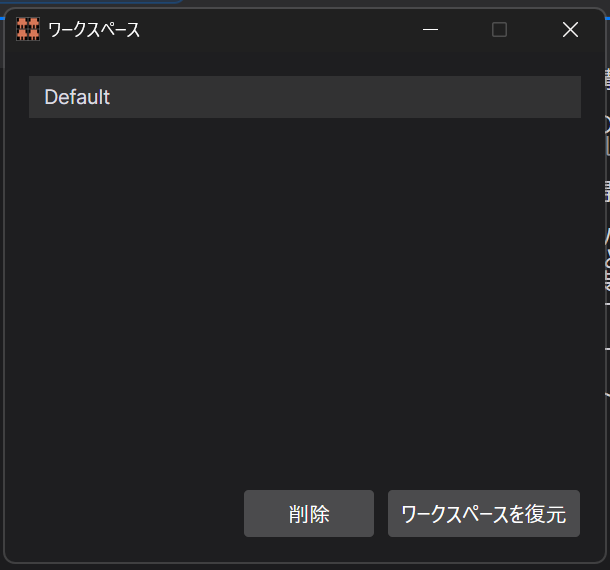
A workspace is a named snapshot of which windows are open and how they are arranged. Use Save Workspace As… from the Workspaces dialog to capture the current layout, and select a saved entry to restore it later — useful for switching between different working contexts within the same project without rebuilding the layout each time.
Source Control Panel
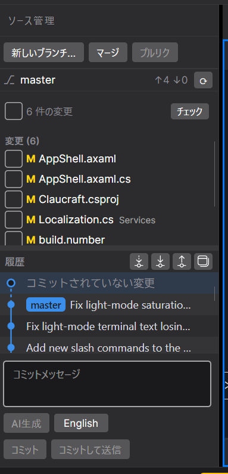
A focused git client for the active project, opened from the activity bar (Ctrl+Shift+G):
- Fetch — checks what is new on the remote without changing any local files.
- Pull — brings the remote's commits into the current branch and replays yours on top.
- Push — sends local commits to the remote.
- Merge — brings another branch's work into the branch you are on.
- Branch menu — switch, create or delete branches.
Before a push, an optional risky files check scans changed files for credentials, machine-local settings, build output and oversized files. A commit message can be generated by the AI in either English or Japanese, set independently of the app's display language. The panel also includes a commit graph for visualizing branch and merge history.
Status Bar & Live Status
The strip along the bottom of the window.
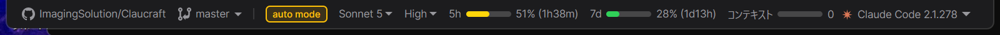
Shows live information for the active session:
- Mode badge — the assistant's current mode; click it, or press Shift+Tab, to cycle modes.
- Context meter — how much of the context window is used before an
automatic compact; clicking it runs
/compact. - Model / Effort — the model and reasoning effort answering in this session. Changing either sends the corresponding command to the terminal, and also updates the default used for new sessions.
- Rate limits — usage against the plan's 5-hour and 7-day metering windows, with time until each resets.
Slash Commands & Command Palette
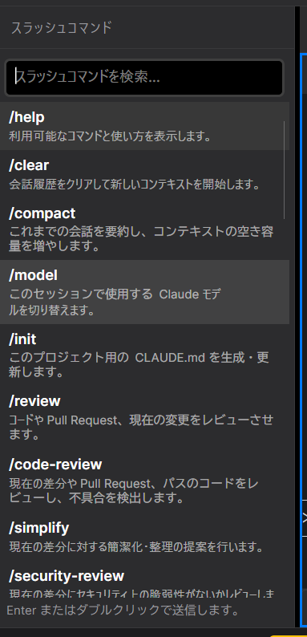
The Slash Commands panel (Ctrl+/) lists every command available to the active session — built-in, project-defined and user-defined — and inserts the selected one into the terminal. The Command Palette provides quick, searchable access to app-level actions (layouts, panels, dialogs) without needing to know their location in the UI.
Shortcuts & Setup Doctor
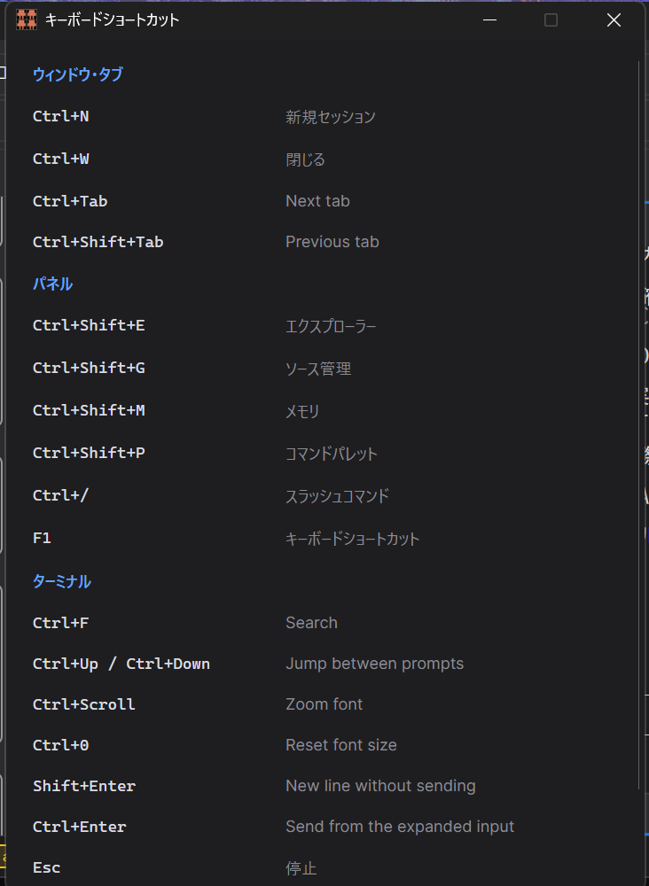
Press F1, or use the Keyboard Shortcuts button in Settings, to open a cheat sheet of every shortcut in the app. Setup Doctor, also in Settings, checks that the AI CLI, git and any other required tools are installed and signed in, and reports what — if anything — needs attention.
Notifications & Updates
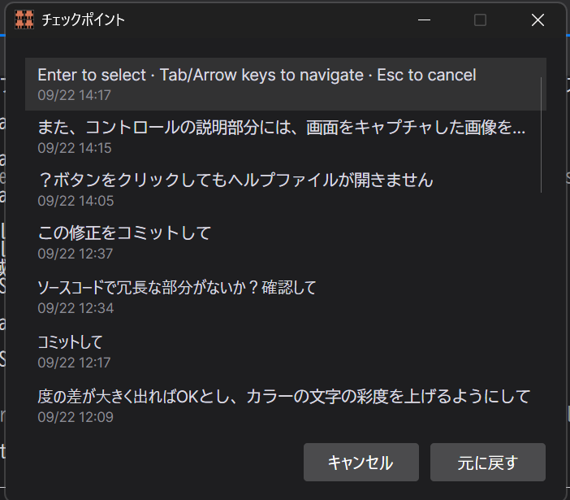
Toast notifications surface events such as a long-running turn finishing while its window is in the background. An update banner appears in the bottom-left corner when a new release is available, with an option to view the release notes or apply the update in place. Checkpoints, reachable from Settings, list saved states you can jump back to within a session.
Extensions
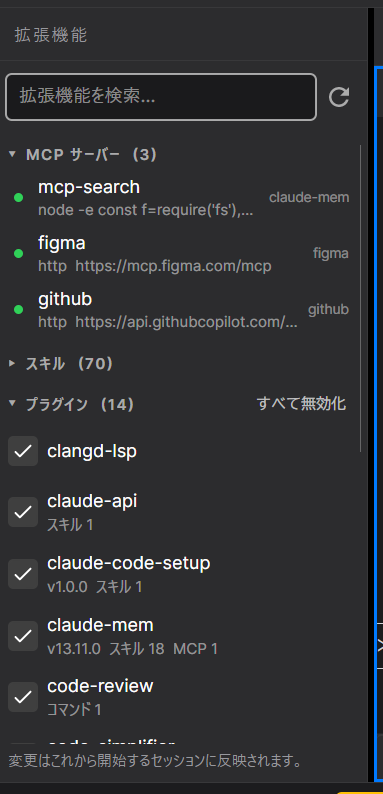
Lists the MCP servers, skills and plugins currently installed for the active AI provider, and whether each is available to the session. Use the refresh button after installing or updating one outside the app.
Launch Profiles & Worktrees
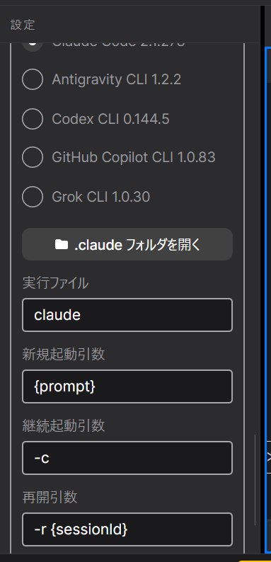
Launch profiles are flags applied automatically to every new session — for example, bounding context length, which is what most directly lowers cost. Configure them from Settings. Worktree mode (toggled from the New Session context menu) starts a session in its own git worktree instead of the shared project folder, so two windows can work on the same repository without editing the same files at the same time.